sharks <- read.csv("data/shark_tank_teaching.csv", stringsAsFactors = FALSE)
nrow(sharks)[1] 1441sum(sharks$equity_offered_pct >= 30)[1] 76mean(sharks$equity_offered_pct >= 30)[1] 0.05274115By the end of Lecture 6, you can
Driving question
Not everything comes in whole numbers: equity shares, waiting times, and revenues can take any value in a range. Insurers, banks, and operations planners calculate risks for such quantities every day. For this they need a new kind of probability model.
You plan to offer the sharks 30% of your company. How unusual is that, and can a model with two numbers answer the question without counting every pitch?
Do all the preparation below before class.
Video preparation
Watch Probability Density Functions, Uniform and Piecewise Constant PDFs, and Normal Random Variables. Focus on the difference between density height and probability, and on the roles of the two normal parameters. All links are also listed in the External Video Guide. The videos explain key ideas in another way and can use a different notation. The lecture material and its notation always come first.
Warm up. A discrete random variable has separate possible values with gaps between them (Lecture 3 attached a PMF and a CDF to such variables). A continuous random variable can take every real value in an interval. Match each variable to the better description:
Variables 1 and 3 are discrete. Variables 2 and 4 are continuous in a mathematical model, even if a measuring device or database records rounded values.
Predict. Answer this question before you come to class: for a continuous random variable \(X\), is \(P(X = \text{exactly } 10)\) very small or exactly zero? Choose one answer and write it down. The lecture material gives the correct answer.
If fractions or rearranging an equation feel unfamiliar, review Mathematics Refresher: fractions and rearranging equations. The same refresher has short parts on square roots and on inequalities.
This section builds probability models for quantities that can take any value in a range. It uses them to answer one question about the equity offered in the Shark Tank file.
You plan to offer the sharks 30% of your company. Is that unusual? The Shark Tank file records the equity offered in each pitch (equity_offered_pct). The code below reads the file and counts the pitches that offered 30% or more.
sharks <- read.csv("data/shark_tank_teaching.csv", stringsAsFactors = FALSE)
nrow(sharks)[1] 1441sum(sharks$equity_offered_pct >= 30)[1] 76mean(sharks$equity_offered_pct >= 30)[1] 0.05274115In the file, 76 of the 1,441 pitches offered 30% or more, about 5%. Now suppose you did not have the file. You only knew two numbers about the offers: the mean and the standard deviation.
# sd() divides by n - 1. With 1,441 records the difference from dividing
# by N is in the third decimal.
c(mean_equity = mean(sharks$equity_offered_pct),
sd_equity = sd(sharks$equity_offered_pct))mean_equity sd_equity
13.207613 8.444355 The mean is 13.2% and the standard deviation is 8.4 percentage points. Could you still say how unusual 30% is? If you ask an AI assistant this question, it will often use a model called the normal distribution and report about 2%. That is less than half of the share in the data. The section on checking the normal model against data explains the difference.
Equity offered is a continuous quantity: an offer \(X\) can be any percentage in a range, for example 29.87%. What is the probability that an offer is exactly 30%?
Take a narrow interval, a window, around 30. The offer lies between 29.5% and 30.5% with some probability \(c\). The window from 29.95% to 30.05% is ten times narrower. Over such a short range the probability is spread almost evenly, so this window holds about \(c/10\). Every further decimal divides the probability by about ten. The value “exactly 30%” lies inside every one of these windows. So its probability is at most \(c\), at most \(c/10\), at most \(c/100\), and so on without end. No positive number is below all of these. The probability is zero. For a continuous random variable,
\[P(X=x)=0 \quad\text{for every single value } x.\]
This answers the prediction question from before class: exactly zero, not very small. Probability has not disappeared. It belongs to intervals, not to single values.
Zero probability does not mean impossible. The next founder certainly offers some exact share of the company. Whatever that share turns out to be, it had probability zero in advance, and it occurred anyway. A continuous random variable always takes a value. The result only says that you cannot name a single value in advance that has a positive probability.
MIT explanation (review): 08.2 Probability Density Functions.
For a discrete random variable, the PMF gives a probability to each single value. For a continuous variable that no longer helps, because every single value has probability zero. We need something else, and the histogram already contains the idea.
Imagine a histogram of the equity offered, like the one in Lecture 1, but for offers that are recorded exactly, without rounding. The intervals of a histogram are also called bins. The height of each bar is the share of offers in its bin. With bins 5 percentage points wide, the bars have a reasonable size. Now make the bins 1 point wide. Each new bar holds about a fifth of what the old bar held, so all bars shrink. With bins 0.1 wide they shrink again, by another factor of ten. The whole histogram sinks towards the axis. This is the shrinking window of the previous section, now for all bins at once. A histogram with the share in the bin as its height is not useful once the bins are narrow.
There is a second way to draw the heights. Divide the share in each bin by the width of the bin. The height is then the share per percentage point. Now the picture does not sink when the bins get narrower. A bar 1 point wide that holds 2% of the offers has the height \(0.02/1=0.02\) per point. A bar 0.1 wide that holds 0.2% of the offers has the height \(0.002/0.1=0.02\) per point as well. With narrower bins, the bars stop shrinking and form a smooth curve, as Figure 6.1 shows. The figure uses bins 5, 1, and 0.25 wide. This curve is the probability density, written \(f_X(x)\). Its height at 30 is the share per percentage point near 30. The share in a bin is the height of the bar times its width, which is the area of the bar. Probability has become area.
The Shark Tank file records rounded percentages, so it cannot show what happens in very narrow bins. The figure therefore uses 100,000 invented offers. A computer drew them, without rounding, from a smooth model with the same mean and standard deviation as the equity offered in the file.
library(ggplot2)
sharks <- read.csv("data/shark_tank_teaching.csv", stringsAsFactors = FALSE)
mean_equity <- mean(sharks$equity_offered_pct)
# sd() divides by n - 1. With 1,441 records the difference from dividing
# by N is in the third decimal.
sd_equity <- sd(sharks$equity_offered_pct)
# 100,000 invented offers that are not rounded. They come from a smooth,
# right-skewed model (a gamma distribution) with the mean and the standard
# deviation of the equity offered in the Shark Tank file.
model_shape <- (mean_equity / sd_equity)^2
model_rate <- mean_equity / sd_equity^2
set.seed(206)
exact_offers <- rgamma(100000, shape = model_shape, rate = model_rate)
panel_names <- c("Bins 5 points wide", "Bins 1 point wide",
"Bins 0.25 points wide")
offers_wide <- data.frame(
panel = factor(panel_names[1], levels = panel_names), x = exact_offers)
offers_mid <- data.frame(
panel = factor(panel_names[2], levels = panel_names), x = exact_offers)
offers_narrow <- data.frame(
panel = factor(panel_names[3], levels = panel_names), x = exact_offers)
# The same smooth curve for all three panels: the density of the model.
x_grid <- seq(0, 50, length.out = 400)
smooth_curve <- data.frame(
panel = factor(rep(panel_names, each = length(x_grid)),
levels = panel_names),
x = rep(x_grid, times = 3),
density = rep(dgamma(x_grid, shape = model_shape, rate = model_rate),
times = 3)
)
ggplot() +
geom_histogram(data = offers_wide, aes(x, after_stat(density)),
binwidth = 5, boundary = 0,
fill = "#009E73", alpha = 0.85, colour = "white") +
geom_histogram(data = offers_mid, aes(x, after_stat(density)),
binwidth = 1, boundary = 0,
fill = "#009E73", alpha = 0.85, colour = "white",
linewidth = 0.2) +
geom_histogram(data = offers_narrow, aes(x, after_stat(density)),
binwidth = 0.25, boundary = 0,
fill = "#26AD88", colour = "#26AD88", linewidth = 0.1) +
geom_line(data = smooth_curve, aes(x, density), colour = "#17324D",
linewidth = 0.9) +
facet_wrap(~panel) +
coord_cartesian(xlim = c(0, 50)) +
scale_x_continuous(breaks = seq(0, 50, by = 10)) +
scale_y_continuous(limits = c(0, 0.07),
expand = expansion(mult = c(0, 0.02))) +
labs(x = "Equity offered (%), invented offers without rounding",
y = "Density (share per point)") +
theme_minimal(base_size = 13) +
theme(
panel.grid.minor = element_blank(),
panel.grid.major.x = element_blank(),
plot.caption = element_text(colour = "#5B6976"),
axis.title = element_text(colour = "#17324D"),
strip.text = element_text(colour = "#17324D", hjust = 0)
)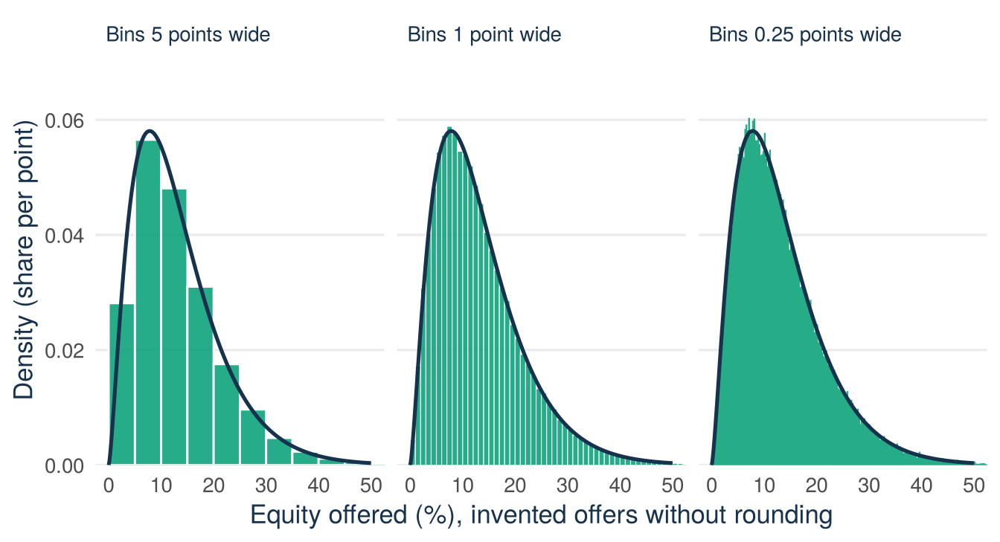
A metal rod gives the same picture without data. The rod has a weight per metre at each point, which is its density, and no single point of the rod has any weight. The weight of a piece is its density times its length. A probability density is read in the same way: no single value has probability, and the probability of an interval is the area under the curve over that interval.
Definition
Probability density function (PDF). A curve \(f_X(x)\) that is never negative and has a total area of 1 under it. The probability that \(X\) lies between \(a\) and \(b\) is the area under the curve between \(a\) and \(b\). The height \(f_X(x)\) is the probability per unit of \(x\) near the value \(x\). It is a rate, not a probability.
For example, in Figure 6.1 the probability of an offer between 10% and 20% is the area under the navy curve between 10 and 20.
Three rules for reading a density follow. The histogram helps you to remember them.
The Shark Tank file records the equity offered in rounded percentages, so values repeat.
sum(sharks$equity_offered_pct == 30)[1] 33In the file, 33 of the 1,441 pitches show exactly 30. These repeated values come from rounding the percentages in the file, not from the quantity itself. The model is continuous, and in the model an offer of exactly 30% has probability zero.
You do not need calculus in this course. You read probability as an area, and you calculate it with a CDF, with R, or with supplied values.
A function \(f_X\) is a density of the continuous random variable \(X\) if it is never negative and has total area 1,
\[f_X(x)\ge 0 \ \text{ for every } x, \qquad \int_{-\infty}^{\infty} f_X(x)\,dx=1,\]
and if, for all values \(a\le b\),
\[P(a\le X\le b)=\int_a^b f_X(x)\,dx.\]
The integral is the area under the curve between \(a\) and \(b\). For \(a=b\) the area has zero width, which gives \(P(X=a)=0\) again.
Yes. The curve is never negative and its total area is \(0.5 \times 2 = 1\), so it is a valid PDF. The height 2 is not a probability. No probability here exceeds 1, because every probability is an area inside that rectangle. The height 2 means that the probability is packed into a narrow range.
The cumulative distribution function (CDF) is still
\[F_X(x)=P(X\le x),\]
exactly as in Lecture 3. In a picture, \(F_X(x)\) is the area under the density to the left of \(x\). For a continuous random variable the CDF rises smoothly, without jumps (it is continuous), from 0 to 1. It never falls (it is non-decreasing), because a move to the right can only add area. Figure 6.3 in the next section shows an example.
The probability of an interval is the difference of two CDF values:
\[P(a<X\le b)=F_X(b)-F_X(a).\]
Because a single point has zero probability, changing \(<\) to \(\le\) does not change a continuous probability: \(P(a<X<b)\), \(P(a\le X\le b)\), and the two mixed versions are all equal. For a discrete variable this is different: a single value may have positive probability, so it matters whether you write \(<\) or \(\le\).
MIT explanation (review): 08.3 Uniform and Piecewise Constant PDFs.
The uniform distribution is the simplest continuous model. All possible values lie in an interval from \(a\) to \(b\), and all parts of this interval with the same length are equally likely. We write \(X\sim U(a,b)\). The numbers \(a\) and \(b\) are the parameters of the distribution. The interval \([a,b]\) is the set of possible values, also called the support. The density is constant on the support,
\[f_X(x)=\frac{1}{b-a},\qquad a\le x\le b,\]
and zero outside it. You cannot choose the height freely. The whole rectangle must have area 1:
\[\text{width}\times\text{height}=(b-a)\times\frac{1}{b-a}=1.\]
Because the height is constant, the probability of an interval depends only on its length. For \(a\le c<d\le b\),
\[P(c<X<d)=\frac{d-c}{b-a}.\]
Here are the mean, the variance, and the standard deviation, without a derivation:
\[E[X]=\frac{a+b}{2},\qquad \operatorname{Var}(X)=\frac{(b-a)^2}{12}, \qquad \operatorname{SD}(X)=\frac{b-a}{\sqrt{12}}.\]
Example 6.1 (Worked example: when does the pitch appear?) An invented example. A recording session of the TV show lasts 90 minutes, and a pitch is equally likely to start at any moment of the session. Model the start time as \(X\sim U(0,90)\), measured in minutes.
Step 1: the height. The density is \(1/(90-0)=1/90\approx 0.011\) per minute. The total area must be 1, and this sets the height.
Step 2: the event. “The pitch starts during the 18-minute window from minute 30 to minute 48” is the event \(30<X<48\).
Step 3: the area. The probability is the area of the shaded rectangle in Figure 6.2:
\[P(30<X<48)=\frac{48-30}{90-0}=\frac{18}{90}=0.20.\]
For a uniform model, only the length of the window matters: any 18-minute window inside the session has probability 0.20.
library(ggplot2)
a <- 0
b <- 90
c_cut <- 30
d_cut <- 48
density_height <- 1 / (b - a)
support_rect <- data.frame(x = c(a, b), y = density_height)
window_rect <- data.frame(x = c(c_cut, d_cut), y = density_height)
density_line <- data.frame(x = c(-9, a, a, b, b, 99),
y = c(0, 0, density_height, density_height, 0, 0))
ggplot() +
geom_area(data = support_rect, aes(x, y), fill = "grey75", alpha = 0.25) +
geom_area(data = window_rect, aes(x, y), fill = "#009E73", alpha = 0.25) +
geom_line(data = density_line, aes(x, y), colour = "#17324D",
linewidth = 1.2) +
annotate("text", x = 66, y = 0.0127,
label = "density = 1/(b - a) = 1/90",
colour = "#17324D", size = 3.4) +
annotate("segment", x = 39, xend = 39, y = 0.0042, yend = 0.0010,
colour = "#17324D",
arrow = arrow(length = unit(0.08, "inches"))) +
annotate("text", x = 39, y = 0.0052,
label = "area = P(30 < X < 48) = 0.20",
colour = "#17324D", size = 3.4) +
scale_x_continuous(breaks = c(a, c_cut, d_cut, b),
labels = c("a = 0", "c = 30", "d = 48", "b = 90"),
expand = c(0, 0)) +
scale_y_continuous(breaks = c(0, density_height),
labels = c("0", "1/90"),
limits = c(0, 0.0145),
expand = c(0, 0)) +
labs(x = "Minutes into the session", y = "Density") +
theme_minimal(base_size = 13) +
theme(
panel.grid.minor = element_blank(),
panel.grid.major.x = element_blank(),
plot.caption = element_text(colour = "#5B6976"),
axis.title = element_text(colour = "#17324D")
)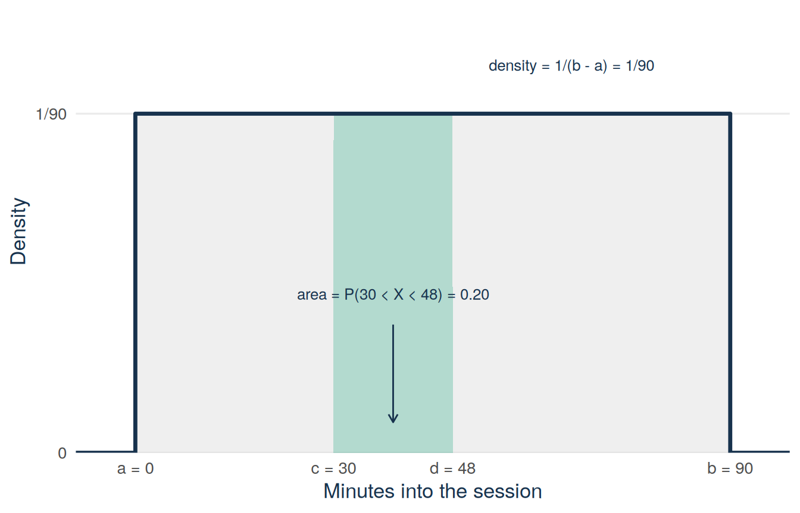
Read the horizontal axis as possible start times and the vertical axis as density, not probability. The navy density line is at 0 before minute 0, jumps to \(1/90\) on the support, and drops back to 0 after minute 90. The green probability is an area: \(18\times(1/90)=0.20\). In the check above, the height was 2. Here the height is far below 1. Both densities are valid, because only the area is a probability.
For the session model, the area to the left of \(x\) is a rectangle of width \(x\) and height \(1/90\). So the CDF is \(F_X(x)=x/90\) for \(0\le x\le 90\). It is 0 before minute 0 and 1 after minute 90. Figure 6.3 shows it. The probability of the window is the difference of two CDF values:
\[P(30<X<48)=F_X(48)-F_X(30)=\frac{48}{90}-\frac{30}{90}=0.20.\]
This is the same 0.20 as the green area in Figure 6.2.
library(ggplot2)
a <- 0
b <- 90
c_cut <- 30
d_cut <- 48
F_c <- (c_cut - a) / (b - a)
F_d <- (d_cut - a) / (b - a)
cdf_line <- data.frame(x = c(-9, a, b, 99), y = c(0, 0, 1, 1))
ggplot() +
annotate("segment", x = c(c_cut, d_cut), xend = c(c_cut, d_cut),
y = 0, yend = c(F_c, F_d),
linetype = "dashed", colour = "#C98B2E", linewidth = 0.6) +
annotate("segment", x = -9, xend = c(c_cut, d_cut),
y = c(F_c, F_d), yend = c(F_c, F_d),
linetype = "dashed", colour = "#C98B2E", linewidth = 0.6) +
geom_line(data = cdf_line, aes(x, y), colour = "#17324D",
linewidth = 1.2) +
annotate("segment", x = 6, xend = 6, y = F_c, yend = F_d,
colour = "#009E73", linewidth = 1.6) +
annotate("text", x = 8, y = (F_c + F_d) / 2,
label = "difference = 0.20", colour = "#17324D",
size = 3.4, hjust = 0) +
annotate("text", x = 66, y = 0.58, label = "F(x) = x/90",
colour = "#17324D", size = 3.4, hjust = 0) +
scale_x_continuous(breaks = c(a, c_cut, d_cut, b), expand = c(0, 0)) +
scale_y_continuous(breaks = c(0, F_c, F_d, 1),
labels = c("0", "F(30) = 0.33", "F(48) = 0.53", "1"),
limits = c(0, 1.05), expand = c(0, 0)) +
labs(x = "Minutes into the session (x)",
y = "Cumulative probability F(x)") +
theme_minimal(base_size = 13) +
theme(
panel.grid.minor = element_blank(),
panel.grid.major.x = element_blank(),
plot.caption = element_text(colour = "#5B6976"),
axis.title = element_text(colour = "#17324D")
)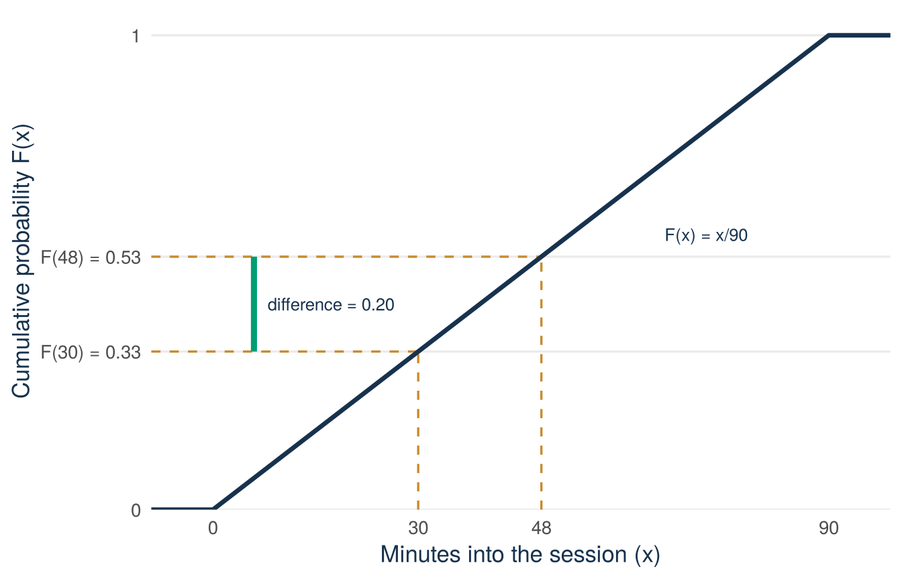
Try this with your neighbour first. Same model, \(X\sim U(0,90)\). What is the probability that the pitch starts in the final 27 minutes of the session?
Step 1 (given). The event is \(63<X<90\), an interval of length \(90-63=27\) minutes inside the support.
Step 2 (you). Divide the interval length by the support length.
Step 3 (you). Interpret the result in one sentence.
\(P(63<X<90)=27/90=0.30\): under the uniform model there is a 30% chance that the pitch starts in the final 27 minutes. This is larger than the 0.20 above only because the window is longer.
MIT explanation (review): 08.8 Normal Random Variables.
Many quantities have a bell-shaped distribution, with most values near the middle and few values far away on either side. Why is this shape so common? Take the adult height of a person. Think of it as a starting value plus a long list of small pushes. One gene pushes the height up a little, another pushes it down. Good food in childhood adds a bit, and an illness takes a bit away. There are hundreds of such influences. Each one is small, and each is roughly independent of the others. The final height is the sum of all the pushes.
How does a person become very tall? Nearly all the pushes must go up, and that almost never happens. In the same way, a coin almost never lands heads ten times in a row. A height near the average can arise in very many ways: in every mixture where the ups and downs roughly cancel each other. With ten coin tosses there is one way to get ten heads, but there are 252 ways to get five heads. So most people end up near the middle, and few end up far away. A very short height is as rare as a very tall one, so the two sides of the bell fall off at the same rate. That is the bell shape.
Figure 6.4 shows this with a computer simulation. One repetition adds up 10 pushes. Each push is \(+1\) or \(-1\) with equal probability, like heads and tails of a coin. The figure counts the totals of 10,000 repetitions.
library(ggplot2)
# One repetition: 10 pushes, each +1 or -1 with equal probability, added up.
set.seed(206)
pushes <- matrix(sample(c(-1, 1), size = 10 * 10000, replace = TRUE),
ncol = 10)
total <- rowSums(pushes)
total_counts <- as.data.frame(
table(total = factor(total, levels = seq(-10, 10, by = 2))))
total_counts$total <- as.numeric(as.character(total_counts$total))
# Number of ways to reach a total. Five ups and five downs give 0: 252 ways.
# Ten ups give 10: 1 way.
ways_zero <- choose(10, 5)
ways_ten <- choose(10, 10)
top <- max(total_counts$Freq)
ggplot(total_counts, aes(total, Freq)) +
geom_col(fill = "#009E73", alpha = 0.85, width = 1.6) +
annotate("text", x = 0, y = top + 200,
label = paste(ways_zero, "ways to reach 0"),
colour = "#17324D", size = 3.4) +
annotate("text", x = c(-10, 10), y = 520,
label = paste0(ways_ten, " way to\nreach ", c(-10, 10)),
colour = "#17324D", size = 3.4, lineheight = 0.95) +
annotate("segment", x = c(-10, 10), xend = c(-10, 10), y = 330, yend = 60,
colour = "#17324D",
arrow = arrow(length = unit(0.08, "inches"))) +
scale_x_continuous(breaks = seq(-10, 10, by = 2)) +
scale_y_continuous(limits = c(0, top + 350),
expand = expansion(mult = c(0, 0.02))) +
labs(x = "Total of the 10 pushes",
y = "Number of repetitions (of 10,000)") +
theme_minimal(base_size = 13) +
theme(
panel.grid.minor = element_blank(),
panel.grid.major.x = element_blank(),
plot.caption = element_text(colour = "#5B6976"),
axis.title = element_text(colour = "#17324D")
)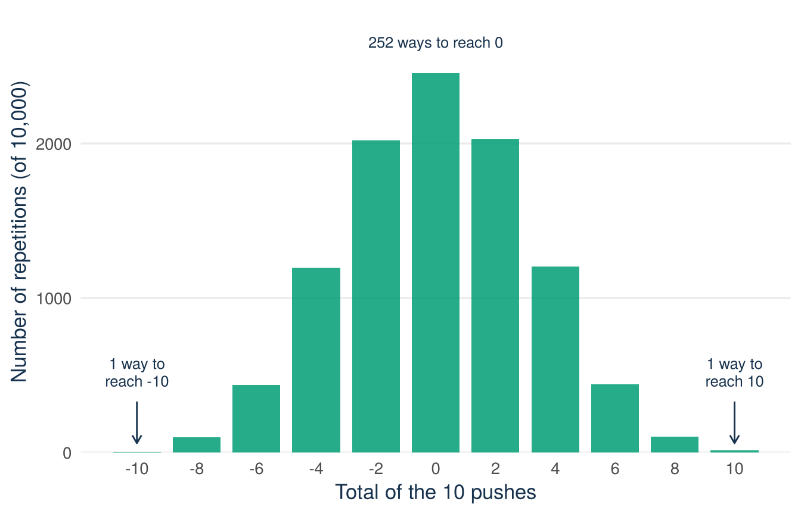
The same explanation fits many quantities. The weight of a filled package is the sum of the weights of everything in it. An exam score adds up many small successes and small mistakes. Suppose a quantity is the sum of many small, independent influences, and no single influence is much larger than the others. Then its distribution tends to be bell-shaped. The normal distribution is the mathematical model for this shape.
The normal distribution is a model, not a law. The explanation above also tells you when to doubt it. If one influence is much larger than the others, for example an upper limit, a cut-off, or one large cause, the bell shape is lost. If the influences multiply and do not add, as with growth rates, the distribution is skewed and not symmetric. Many business variables are like this. Revenues, firm sizes, and the equity offered in the Shark Tank file are strongly skewed, and the normal model does not fit them. The section on checking the normal model against data comes back to this.
A normal model needs two numbers. The first is its mean \(\mu\). The second is its standard deviation \(\sigma\). Lecture 3 introduced both symbols.
Definition
Normal distribution. A continuous distribution with a symmetric, bell-shaped density. Its centre is the mean \(\mu\), and its spread is the standard deviation \(\sigma>0\). We write \(X\sim N(\mu,\sigma^2)\).
Read the notation with care: the second number in the brackets is the variance \(\sigma^2\), not the standard deviation. For example, \(N(50,100)\) has \(\sigma=\sqrt{100}=10\). In symbols,
\[E[X]=\mu,\qquad \operatorname{Var}(X)=\sigma^2, \qquad \operatorname{SD}(X)=\sigma.\]
The density of \(N(\mu,\sigma^2)\) is
\[f_X(x)=\frac{1}{\sigma\sqrt{2\pi}}\, \exp\!\left(-\frac{(x-\mu)^2}{2\sigma^2}\right).\]
You do not have to know this formula by heart. R evaluates it with dnorm().
The two parameters have different roles, as Figure 6.5 shows. A change in \(\mu\) shifts the whole curve to the left or to the right, and the shape stays the same. A change in \(\sigma\) makes the curve wider or narrower. A wider curve is also lower, because the total area stays 1.
library(ggplot2)
x_grid <- seq(-6, 8, length.out = 600)
panel_shift <- "Changing the mean shifts the curve"
panel_width <- "Changing the SD widens the curve"
curves <- rbind(
data.frame(panel = panel_shift, curve = "first", x = x_grid,
density = dnorm(x_grid, mean = 0, sd = 1)),
data.frame(panel = panel_shift, curve = "second", x = x_grid,
density = dnorm(x_grid, mean = 3, sd = 1)),
data.frame(panel = panel_width, curve = "first", x = x_grid,
density = dnorm(x_grid, mean = 0, sd = 1)),
data.frame(panel = panel_width, curve = "second", x = x_grid,
density = dnorm(x_grid, mean = 0, sd = 2))
)
curves$panel <- factor(curves$panel, levels = c(panel_shift, panel_width))
curve_labels <- data.frame(
panel = factor(c(panel_shift, panel_shift, panel_width, panel_width),
levels = c(panel_shift, panel_width)),
curve = c("first", "second", "first", "second"),
x = c(-1.2, 4.2, 1.1, 3.3),
y = c(0.36, 0.36, 0.36, 0.12),
label = c("mu == 0*','~sigma == 1", "mu == 3*','~sigma == 1",
"mu == 0*','~sigma == 1", "mu == 0*','~sigma == 2"),
hjust = c(1, 0, 0, 0)
)
ggplot(curves, aes(x, density, colour = curve)) +
geom_line(linewidth = 1.1) +
geom_text(data = curve_labels, aes(x, y, label = label, hjust = hjust),
parse = TRUE, size = 3.4) +
facet_wrap(~panel) +
scale_colour_manual(values = c(first = "#009E73", second = "#D55E00"),
guide = "none") +
scale_x_continuous(breaks = seq(-6, 8, by = 2)) +
scale_y_continuous(limits = c(0, 0.43),
expand = expansion(mult = c(0, 0.02))) +
labs(x = "Value of X", y = "Density") +
theme_minimal(base_size = 13) +
theme(
panel.grid.minor = element_blank(),
panel.grid.major.x = element_blank(),
plot.caption = element_text(colour = "#5B6976"),
axis.title = element_text(colour = "#17324D"),
strip.text = element_text(colour = "#17324D", hjust = 0)
)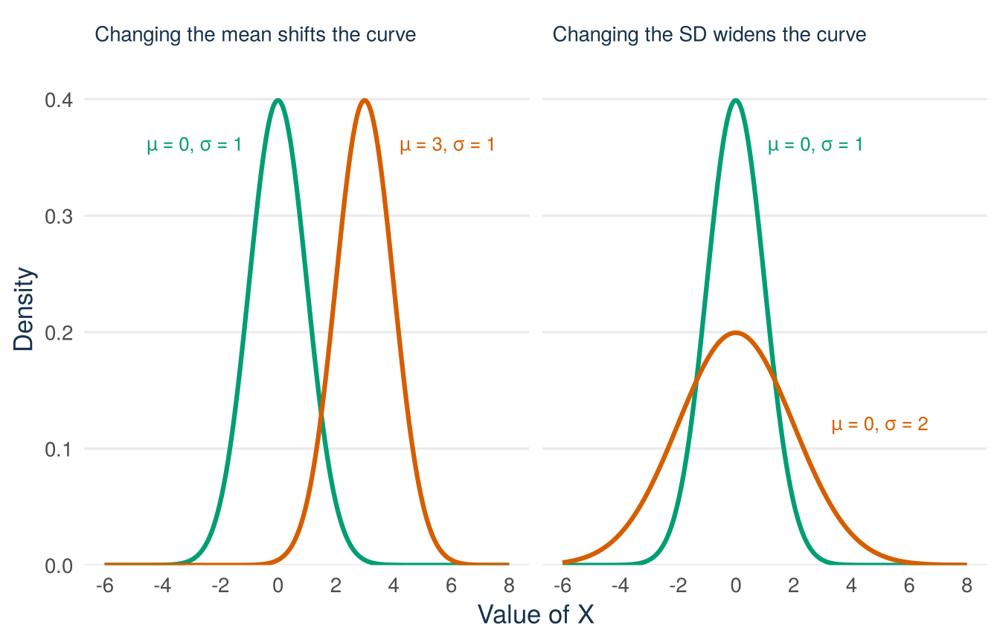
Figure 6.6 shows where the probability of a normal model lies.
library(ggplot2)
normal_curve <- data.frame(z = seq(-3.6, 3.6, length.out = 800))
normal_curve$density <- dnorm(normal_curve$z)
ggplot(normal_curve, aes(z, density)) +
geom_area(data = subset(normal_curve, z >= -1 & z <= 1),
fill = "#009E73", alpha = 0.25) +
geom_vline(xintercept = c(-1, 1), linetype = "dashed",
colour = "#5B6976", linewidth = 0.5) +
geom_vline(xintercept = 0, linetype = "dashed",
colour = "#C98B2E", linewidth = 0.7) +
geom_line(colour = "#17324D", linewidth = 1.2) +
annotate("text", x = 0, y = 0.16, label = "about 68%",
colour = "#17324D", size = 3.4) +
annotate("text", x = 0.15, y = 0.425, label = "mean~mu", parse = TRUE,
colour = "#17324D", size = 3.4, hjust = 0) +
scale_x_continuous(breaks = c(-2, -1, 0, 1, 2),
labels = expression(mu - 2 * sigma, mu - sigma, mu,
mu + sigma, mu + 2 * sigma)) +
scale_y_continuous(limits = c(0, 0.43),
expand = expansion(mult = c(0, 0.02))) +
labs(x = "Value of X", y = "Density") +
theme_minimal(base_size = 13) +
theme(
panel.grid.minor = element_blank(),
panel.grid.major.x = element_blank(),
plot.caption = element_text(colour = "#5B6976"),
axis.title = element_text(colour = "#17324D")
)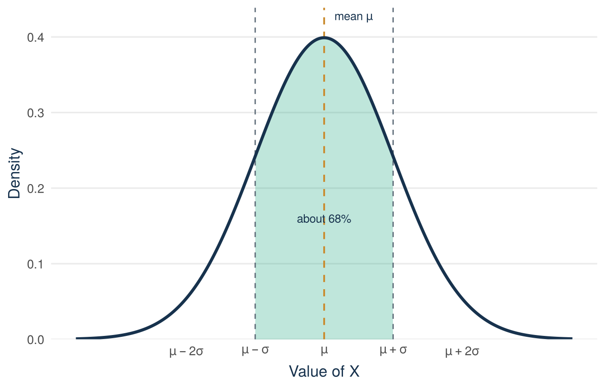
The horizontal axis shows possible values in terms of \(\mu\) and \(\sigma\). The vertical axis is density, and probability is again area. In the normal model, about 68% of the distribution lies within one standard deviation of the mean and about 95% within 1.96 standard deviations. The section on the central part of the standard normal explains the value 1.96. These are facts about the mathematical model. The box “What a normal label can and cannot say” below explains why they are not automatically true for every dataset.
Return to the offer of 30%. Take the normal model that has the mean and the standard deviation of the equity offered in the Shark Tank file, \(X\sim N(13.2,\,8.4^2)\). In this model, the probability of an offer of 30% or more is the area under the curve to the right of 30. Figure 6.7 shows that this area is small.
library(ggplot2)
sharks <- read.csv("data/shark_tank_teaching.csv", stringsAsFactors = FALSE)
mean_equity <- mean(sharks$equity_offered_pct)
# sd() divides by n - 1. With 1,441 records the difference from dividing
# by N is in the third decimal.
sd_equity <- sd(sharks$equity_offered_pct)
model_curve <- data.frame(x = seq(-15, 45, length.out = 601))
model_curve$density <- dnorm(model_curve$x, mean = mean_equity,
sd = sd_equity)
ggplot(model_curve, aes(x, density)) +
geom_area(data = subset(model_curve, x >= 30),
fill = "#D55E00", alpha = 0.55) +
geom_vline(xintercept = mean_equity, linetype = "dashed",
colour = "#C98B2E", linewidth = 0.7) +
geom_line(colour = "#17324D", linewidth = 1.2) +
annotate("text", x = mean_equity + 0.8, y = 0.0495, label = "mean 13.2%",
colour = "#17324D", size = 3.4, hjust = 0) +
annotate("segment", x = 35, xend = 32.2, y = 0.012, yend = 0.003,
colour = "#17324D",
arrow = arrow(length = unit(0.08, "inches"))) +
annotate("text", x = 30.5, y = 0.0168, label = "area == P(X >= 30)",
parse = TRUE, colour = "#17324D", size = 3.4, hjust = 0) +
annotate("text", x = 30.5, y = 0.0138, label = "about 2% in this model",
colour = "#17324D", size = 3.4, hjust = 0) +
scale_x_continuous(breaks = seq(-10, 40, by = 10)) +
scale_y_continuous(limits = c(0, 0.052),
expand = expansion(mult = c(0, 0.02))) +
labs(x = "Equity offered (%)", y = "Density") +
theme_minimal(base_size = 13) +
theme(
panel.grid.minor = element_blank(),
panel.grid.major.x = element_blank(),
plot.caption = element_text(colour = "#5B6976"),
axis.title = element_text(colour = "#17324D")
)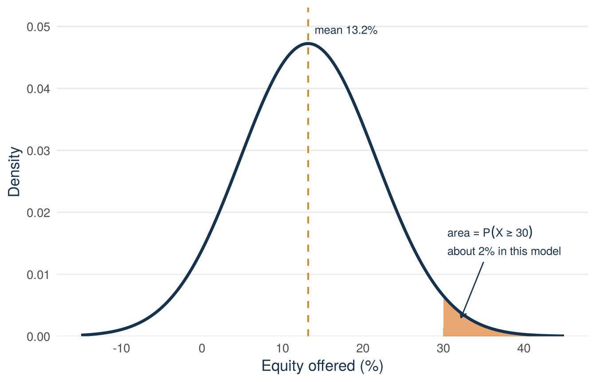
equity_offered_pct) in the Shark Tank file. The gold dashed line marks the mean. The orange area to the right of 30% is the probability that this model gives to an offer of 30% or more, about 2%.
The figure shows the answer of the model, not the answer of the data. The curve also gives some area to values below 0%, which no offer can have. The section on checking the normal model against data returns to both points. To turn the orange area into a number, you need one more tool: standardising.
Definition
z-score. The z-score of a value \(x\) is \(z=\dfrac{x-\mu}{\sigma}\). It says how many standard deviations \(x\) lies above the mean (positive \(z\)) or below the mean (negative \(z\)). Calculating a z-score is called standardising.
If \(X\sim N(\mu,\sigma^2)\), then the standardised variable is again normal, with mean 0 and standard deviation 1:
\[Z=\frac{X-\mu}{\sigma}\sim N(0,1).\]
The mean 0 and the standard deviation 1 follow from the rules for shifting and rescaling in Lecture 3. Write \(Z=\frac{1}{\sigma}X-\frac{\mu}{\sigma}\), so that \(a=1/\sigma\) and \(b=-\mu/\sigma\):
\[E[Z]=\frac{1}{\sigma}\,E[X]-\frac{\mu}{\sigma} =\frac{\mu}{\sigma}-\frac{\mu}{\sigma}=0, \qquad \operatorname{SD}(Z)=\frac{1}{\sigma}\,\operatorname{SD}(X) =\frac{\sigma}{\sigma}=1.\]
The shape does not change. Figure 6.5 showed that \(\mu\) and \(\sigma\) do only two things to a normal curve: \(\mu\) moves it along the axis, and \(\sigma\) stretches it. Every normal curve is the same bell, moved and stretched. Standardising undoes the move and the stretch. What is left is the one bell with mean 0 and standard deviation 1. The distribution \(N(0,1)\) is called the standard normal distribution.
This is why a z-score is useful. It gives the position of a value in its own distribution, in standard deviations from the mean and without units. For a probability, only this position matters. A value 1.5 standard deviations above the mean is at the same place on every bell. The probability of a value above it is therefore the same for a height in centimetres, a weight in grams, or a processing time in minutes. So one set of standard-normal values works for every normal model.
The questions “what is \(P(X\le x)\)?” and “what is \(P(Z\le z)\)?”, with \(z=(x-\mu)/\sigma\), are the same question. Subtract \(\mu\) and divide by \(\sigma\) on both sides of \(X\le x\). This gives \(Z\le z\), and exactly the same outcomes satisfy both inequalities. The two probabilities are equal:
\[P(X\le x)=P\!\left(Z\le\frac{x-\mu}{\sigma}\right).\]
With two general rules you can find more probabilities from one value \(P(Z\le z)\). Both rules hold for every \(z\).
Example 6.2 (Worked example: normal probabilities from supplied Z values) An invented example. The processing time \(Y\) of an order (in minutes) is modelled as \(Y\sim N(50,100)\). The variance is 100, so \(\sigma=\sqrt{100}=10\). In this book, the standard-normal values that you need are given in the task or on the formula sheet, as here:
P(Z <= 1.5) = 0.9332
P(Z <= 1.0) = 0.8413
P(Z <= -1.0) = 0.1587(a) \(P(Y\le 65)\). Standardise the boundary:
\[z=\frac{65-50}{10}=1.5,\]
so
\[P(Y\le 65)=P(Z\le 1.5)=0.9332.\]
(b) \(P(40<Y<60)\). Standardise both boundaries:
\[z_{\text{low}}=\frac{40-50}{10}=-1.0,\qquad z_{\text{high}}=\frac{60-50}{10}=1.0,\]
then take the difference of the two cumulative probabilities, exactly as with any CDF:
\[P(40<Y<60)=P(Z\le 1.0)-P(Z\le -1.0)=0.8413-0.1587=0.6826.\]
That is the 68% rule seen in Figure 6.6: the interval runs from one standard deviation below the mean to one above.
(c) \(P(Y>60)\) and \(P(Y\le 35)\). These two need the complement rule and the symmetry rule. The z-score of 60 is 1.0, and the complement rule gives
\[P(Y>60)=P(Z>1.0)=1-P(Z\le 1.0)=1-0.8413=0.1587.\]
The z-score of 35 is \((35-50)/10=-1.5\). No value for \(-1.5\) is supplied, so use the symmetry rule first and then the complement rule:
\[P(Y\le 35)=P(Z\le -1.5)=P(Z>1.5)=1-0.9332=0.0668.\]
The supplied values also show the symmetry rule at work: \(P(Z\le -1.0)=0.1587\) is the same number as \(P(Z>1.0)\).
pnorm() is the normal CDF in R. Give it the boundary, the mean, and the standard deviation (not the variance). The four lines below repeat the four results of the worked example:
pnorm(65, mean = 50, sd = 10)[1] 0.9331928pnorm(60, mean = 50, sd = 10) - pnorm(40, mean = 50, sd = 10)[1] 0.68268951 - pnorm(60, mean = 50, sd = 10)[1] 0.1586553pnorm(35, mean = 50, sd = 10)[1] 0.0668072The hand calculation and pnorm() agree. Small differences in the fourth decimal come from the rounding of the supplied values.
Now the orange area in Figure 6.7 can be calculated. The model is \(X\sim N(13.2,\,8.4^2)\) and the boundary is 30:
\[z=\frac{30-13.2}{8.4}=2.0.\]
An offer of 30% lies two standard deviations above the mean. The supplied value is \(P(Z\le 2.0)=0.9772\), and the complement rule gives
\[P(X\ge 30)=P(Z\ge 2.0)=1-P(Z\le 2.0)=1-0.9772=0.0228.\]
For a continuous variable, \(\ge\) and \(>\) give the same probability. R confirms the result:
pnorm(2)[1] 0.97724991 - pnorm(2)[1] 0.022750131 - pnorm(30, mean = 13.2, sd = 8.4)[1] 0.02275013The normal model says that about 2% of pitches offer 30% or more. The count in the file gave about 5%. The section on checking the model explains the difference.
pnorm() starts from a value and returns the probability at or below it. The reverse question starts from a probability \(q\): which value has the probability \(q\) at or below it? This value is called the \(q\) quantile.
Definition
Quantile. Take a probability \(q\) between 0 and 1. The \(q\) quantile of a distribution is the value \(x_q\) that has the probability \(q\) at or below it: \(P(X\le x_q)=q\). A percentile is the same value with \(q\) written in percent: the 0.90 quantile is the 90th percentile.
The definition is cumulative: \(q\) is always the area to the left of \(x_q\), as Figure 6.8 shows. The area to the right of \(x_q\) is \(1-q\). In terms of the CDF, \(F_X(x_q)=q\), so finding a quantile is the reverse of reading the CDF.
library(ggplot2)
# The picture is drawn for q = 0.80. The labels hold for every q.
q_shown <- 0.80
x_q <- qnorm(q_shown)
q_curve <- data.frame(x = seq(-3.6, 3.6, length.out = 800))
q_curve$density <- dnorm(q_curve$x)
ggplot(q_curve, aes(x, density)) +
geom_area(data = subset(q_curve, x <= x_q),
fill = "#009E73", alpha = 0.25) +
annotate("segment", x = x_q, xend = x_q, y = 0, yend = dnorm(x_q),
linetype = "dashed", colour = "#C98B2E", linewidth = 0.7) +
geom_line(colour = "#17324D", linewidth = 1.2) +
annotate("text", x = -0.2, y = 0.15,
label = "area == P(X <= x[q])", parse = TRUE,
colour = "#17324D", size = 3.4) +
annotate("text", x = -0.2, y = 0.105, label = "area == q", parse = TRUE,
colour = "#17324D", size = 3.4) +
annotate("text", x = 2.3, y = 0.15, label = "area == 1 - q", parse = TRUE,
colour = "#17324D", size = 3.4) +
annotate("segment", x = 2.2, xend = 1.5, y = 0.125, yend = 0.05,
colour = "#17324D",
arrow = arrow(length = unit(0.08, "inches"))) +
scale_x_continuous(breaks = x_q, labels = expression(x[q])) +
scale_y_continuous(limits = c(0, 0.43),
expand = expansion(mult = c(0, 0.02))) +
labs(x = "Value of X", y = "Density") +
theme_minimal(base_size = 13) +
theme(
panel.grid.minor = element_blank(),
panel.grid.major.x = element_blank(),
plot.caption = element_text(colour = "#5B6976"),
axis.title = element_text(colour = "#17324D"),
axis.text.x = element_text(colour = "#17324D", size = 12)
)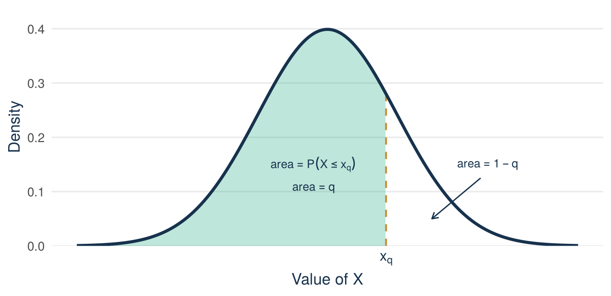
For the standard normal, the \(q\) quantile is written \(z_q\), and R gives it with qnorm(q). Now take a number for \(q\). The 90th percentile of the standard normal is the 0.90 quantile:
qnorm(0.90)[1] 1.281552So \(z_{0.90}=1.2816\): 90% of the area lies at or below 1.2816. For any other normal model, solve \(z=(x-\mu)/\sigma\) for \(x\):
\[x=\mu+z\sigma,\]
where \(z\) is the standard-normal quantile for the chosen probability. With \(z=z_q\), this \(x\) is the \(q\) quantile \(x_q\) of the model.
Example 6.3 (Worked example: the 90th percentile of processing time) Take the invented processing-time model \(Y\sim N(50,100)\) again. Which processing time do only 10% of orders exceed? This is the 90th percentile of \(Y\). The supplied standard-normal quantile is \(z_{0.90}=1.2816\).
Step 1. The 90th percentile of \(Z\) is 1.2816. The value you look for therefore lies 1.2816 standard deviations above the mean.
Step 2. Translate back to the scale of \(Y\):
\[x=\mu+z\sigma=50+1.2816\times 10=62.8 \text{ minutes.}\]
Step 3. Verify with qnorm(), the reverse of pnorm():
qnorm(0.90, mean = 50, sd = 10)[1] 62.81552About 62.8 minutes: 90% of processing times fall at or below it, 10% above.
One pair of quantiles is used again and again in later lectures: the two values that enclose the central part of the standard normal. Start with the probability that is left outside the central part, and call it \(\alpha\) (the Greek letter alpha). The central part then holds the probability \(1-\alpha\). For example, \(\alpha=0.05\) gives a central part of 0.95.
The probability \(\alpha\) lies in two tails, one on the left and one on the right. The standard normal is symmetric around 0, so the two tails are equally large. Each tail holds \(\alpha/2\), as Figure 6.9 shows.
Now find the two boundaries. To the left of the upper boundary lie the central part and the lower tail. The probability at or below it is therefore \((1-\alpha)+\alpha/2=1-\alpha/2\). The upper boundary is the \(1-\alpha/2\) quantile, \(z_{1-\alpha/2}\). The lower boundary needs no new number. By symmetry it lies as far below 0 as the upper boundary lies above 0, so it is \(-z_{1-\alpha/2}\). Together:
\[P\!\left(-z_{1-\alpha/2}\le Z\le z_{1-\alpha/2}\right)=1-\alpha.\]
library(ggplot2)
# The picture is drawn for alpha = 0.10. The labels hold for every alpha.
z_upper <- qnorm(1 - 0.10 / 2)
g_curve <- data.frame(z = seq(-3.6, 3.6, length.out = 800))
g_curve$density <- dnorm(g_curve$z)
ggplot(g_curve, aes(z, density)) +
geom_area(data = subset(g_curve, z >= -z_upper & z <= z_upper),
fill = "#009E73", alpha = 0.25) +
geom_area(data = subset(g_curve, z <= -z_upper),
fill = "#D55E00", alpha = 0.55) +
geom_area(data = subset(g_curve, z >= z_upper),
fill = "#D55E00", alpha = 0.55) +
geom_line(colour = "#17324D", linewidth = 1.2) +
annotate("text", x = 0, y = 0.17, label = "central area",
colour = "#17324D", size = 3.4) +
annotate("text", x = 0, y = 0.13, label = "1 - alpha", parse = TRUE,
colour = "#17324D", size = 4) +
annotate("segment", x = c(-2.9, 2.9), xend = c(-2.1, 2.1),
y = 0.105, yend = 0.03, colour = "#17324D",
arrow = arrow(length = unit(0.08, "inches"))) +
annotate("text", x = c(-2.9, 2.9), y = 0.125, label = "alpha / 2",
parse = TRUE, colour = "#17324D", size = 4) +
annotate("text", x = c(-2.9, 2.9), y = 0.16,
label = c("lower tail", "upper tail"),
colour = "#17324D", size = 3.4) +
scale_x_continuous(breaks = c(-z_upper, 0, z_upper),
labels = expression(-z[1 - alpha / 2], 0,
z[1 - alpha / 2])) +
scale_y_continuous(limits = c(0, 0.43),
expand = expansion(mult = c(0, 0.02))) +
labs(x = "Value of Z", y = "Density") +
theme_minimal(base_size = 13) +
theme(
panel.grid.minor = element_blank(),
panel.grid.major.x = element_blank(),
plot.caption = element_text(colour = "#5B6976"),
axis.title = element_text(colour = "#17324D"),
axis.text.x = element_text(colour = "#17324D", size = 12)
)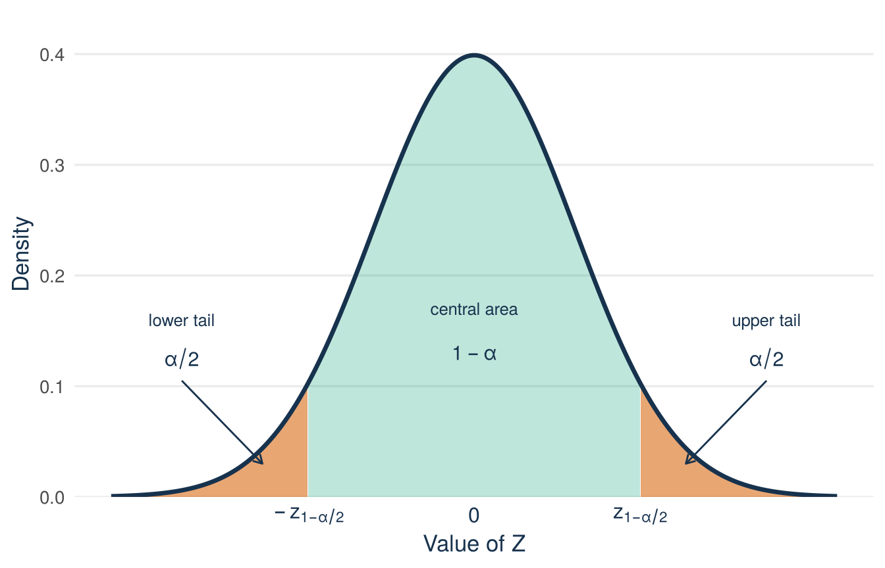
Three central parts are used most often: 90%, 95%, and 99%. They belong to \(\alpha=0.10\), \(\alpha=0.05\), and \(\alpha=0.01\). The quantiles \(z_{1-\alpha/2}\) are then \(z_{0.95}\), \(z_{0.975}\), and \(z_{0.995}\):
qnorm(c(0.95, 0.975, 0.995))[1] 1.644854 1.959964 2.575829| Central part \(1-\alpha\) | \(\alpha\) | In each tail, \(\alpha/2\) | Quantile \(z_{1-\alpha/2}\) | The central part lies between |
|---|---|---|---|---|
| 90% | 0.10 | 0.05 | \(z_{0.95}=1.645\) | \(-1.645\) and \(1.645\) |
| 95% | 0.05 | 0.025 | \(z_{0.975}=1.960\) | \(-1.960\) and \(1.960\) |
| 99% | 0.01 | 0.005 | \(z_{0.995}=2.576\) | \(-2.576\) and \(2.576\) |
A larger central part needs boundaries that lie further out. The 95% case is the one used most. R confirms the symmetry for it:
qnorm(c(0.025, 0.975))[1] -1.959964 1.959964The 0.025 quantile is \(-1.96\) and the 0.975 quantile is \(1.96\). In the standard normal, 95% of the probability lies between \(-1.96\) and \(1.96\), with 2.5% in each tail, as Figure 6.10 shows.
library(ggplot2)
z_cut <- qnorm(0.975)
z_curve <- data.frame(z = seq(-3.6, 3.6, length.out = 800))
z_curve$density <- dnorm(z_curve$z)
centre <- data.frame(z = seq(-z_cut, z_cut, length.out = 400))
centre$density <- dnorm(centre$z)
left_tail <- data.frame(z = seq(-3.6, -z_cut, length.out = 200))
left_tail$density <- dnorm(left_tail$z)
right_tail <- data.frame(z = seq(z_cut, 3.6, length.out = 200))
right_tail$density <- dnorm(right_tail$z)
ggplot(z_curve, aes(z, density)) +
geom_area(data = centre, fill = "#009E73", alpha = 0.25) +
geom_area(data = left_tail, fill = "#D55E00", alpha = 0.55) +
geom_area(data = right_tail, fill = "#D55E00", alpha = 0.55) +
geom_line(colour = "#17324D", linewidth = 1.2) +
annotate("text", x = 0, y = 0.16, label = "95% of the area",
colour = "#17324D", size = 3.4) +
annotate("segment", x = c(-2.9, 2.9), xend = c(-2.3, 2.3),
y = 0.075, yend = 0.02, colour = "#17324D",
arrow = arrow(length = unit(0.08, "inches"))) +
annotate("text", x = c(-2.9, 2.9), y = 0.09, label = "2.5%",
colour = "#17324D", size = 3.4) +
scale_x_continuous(breaks = c(-z_cut, 0, z_cut),
labels = c("-1.96", "0", "1.96")) +
scale_y_continuous(limits = c(0, 0.43),
expand = expansion(mult = c(0, 0.02))) +
labs(x = "Value of Z", y = "Density") +
theme_minimal(base_size = 13) +
theme(
panel.grid.minor = element_blank(),
panel.grid.major.x = element_blank(),
plot.caption = element_text(colour = "#5B6976"),
axis.title = element_text(colour = "#17324D")
)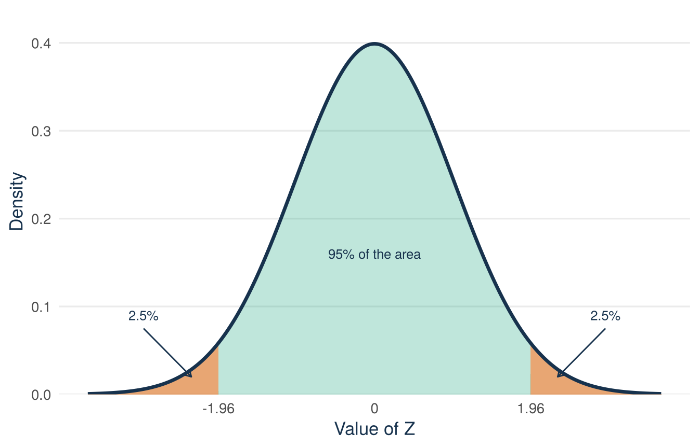
With \(x=\mu+z\sigma\) the same holds for every normal model. The central \(1-\alpha\) of the probability lies between \(\mu-z_{1-\alpha/2}\,\sigma\) and \(\mu+z_{1-\alpha/2}\,\sigma\). For 95%, these are \(\mu-1.96\sigma\) and \(\mu+1.96\sigma\). Lectures 9 and 10 build on the three values 1.645, 1.960, and 2.576.
A sum of independent normal variables is again normal. Its mean and its variance follow from the sum rules of Lecture 5. Lecture 8 uses this fact for the sample mean.
The normal distribution is a model. It does not automatically fit every quantitative variable. Skewness, bounds, extreme outliers, or a few values that repeat very often can make it a poor fit. The check is visual. Draw the histogram of the data and the normal curve with the same mean and standard deviation. Then see whether the curve follows the bars. Figure 6.11 does this for the equity offered (equity_offered_pct) in the Shark Tank file, with the mean of 13.2% and the standard deviation of 8.4 percentage points from the start of this lecture.
library(ggplot2)
sharks <- read.csv("data/shark_tank_teaching.csv", stringsAsFactors = FALSE)
mean_equity <- mean(sharks$equity_offered_pct)
# sd() divides by n - 1. With 1,441 records the difference from dividing
# by N is in the third decimal.
sd_equity <- sd(sharks$equity_offered_pct)
ggplot(sharks, aes(equity_offered_pct)) +
geom_histogram(aes(y = after_stat(density)),
breaks = seq(0, 100, by = 5),
fill = "#009E73", alpha = 0.85, colour = "white") +
stat_function(fun = dnorm,
args = list(mean = mean_equity, sd = sd_equity),
colour = "#D55E00", linewidth = 0.9) +
annotate("text", x = 42, y = 0.062, label = "observed pitches",
colour = "#17324D", size = 3.4, hjust = 0) +
annotate("text", x = 42, y = 0.054,
label = "normal curve with the same mean and SD",
colour = "#D55E00", size = 3.4, hjust = 0) +
scale_y_continuous(expand = expansion(mult = c(0, 0.05))) +
labs(x = "Equity initially offered (%)", y = "Density") +
theme_minimal(base_size = 13) +
theme(
panel.grid.minor = element_blank(),
panel.grid.major.x = element_blank(),
plot.caption = element_text(colour = "#5B6976"),
axis.title = element_text(colour = "#17324D")
)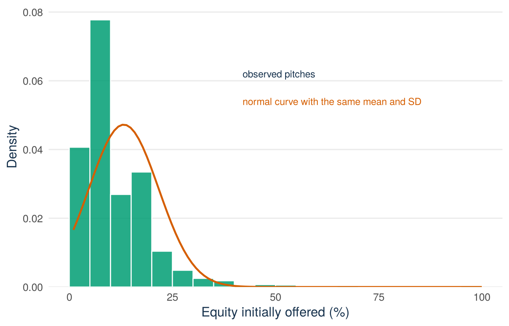
Read Figure 6.11 with the reading sequence from Lecture 1. Unit and variables: one observation is one pitch. The horizontal axis is the equity offered, in percent. Scales: the vertical axis is density, so the areas of the bars, not their heights alone, represent proportions of pitches. One element: the green bars are the 1,441 observed offers. The orange curve is \(N(13.2,\,8.4^2)\), the normal model with the same mean and SD. Pattern: most bars are between 0% and 20%, and a long tail stretches to the right. The data are bounded between 0% and 100%, strongly right-skewed, and have spikes at round values such as 10% and 20%. The symmetric curve misses all three features. Limits: the figure rejects the normal model for single equity offers. It says nothing yet about averages of offers. A model is a choice, and this check shows that the normal model is the wrong choice here.
The opening question shows what happens without the check. The normal model gave \(P(X\ge 30)=0.0228\), about 2%. The data give 76 of 1,441, about 5%. The model misses the long right tail, and the offers of 30% or more lie in that tail.
Still, the normal model remains useful. From Lecture 8 onwards it describes the sampling distribution of an average, that is, how an average varies from sample to sample. Lectures 7 and 8 explain this idea. The normal model fits those distributions well, even when the variable itself is as skewed as this one. That result is the central limit theorem. It is the main reason why the normal model is used so much in statistics.
Lecture 1 found quantiles of data: the median, the quartiles \(Q_1\) and \(Q_3\), and the interquartile range of the equity offered (see Lecture 1). A model distribution has the same quantiles. The median is the 0.50 quantile, and the quartiles are the 0.25 and the 0.75 quantiles.
qnorm(c(0.25, 0.75), mean = 50, sd = 10)[1] 43.2551 56.7449The middle half of this model distribution runs from about 43.3 to 56.7 minutes. The width of this range is the interquartile range of the model.
What a normal label can and cannot say
What you can do with it: use the normal model for quick answers when the histogram looks roughly bell-shaped. When it does not, count the values in the data. From Lecture 8 on, the normal model describes averages, where it works well.
An offer of 30% or more is unusual: about 1 pitch in 20 makes such an offer. In the Shark Tank file, 76 of the 1,441 pitches did, about 5%. The normal model with the same mean and standard deviation says about 2%, because it ignores the long right tail of the offers. So a model with two numbers can answer such a question without counting every pitch, but only when the model fits. The histogram check tells you whether it does.
The tools behind this answer are general. For a continuous variable, no single value has positive probability, \(P(X=x)=0\). Probabilities belong to intervals, and they are areas under a density. The density is the share per unit of width: the curve that a histogram comes close to when its bins get narrow. For a uniform model, only the length of the interval matters: the 18-minute window in the session model has probability \(18/90=0.20\). For a normal model, you standardise and use the supplied \(Z\) values. In the processing-time model \(N(50,100)\) this gave \(P(Y\le 65)=0.9332\) and \(P(40<Y<60)=0.6826\), and pnorm() confirmed both. A quantile goes the other way, from a probability to a value: the 90th percentile of the processing time is \(50+1.2816\times 10=62.8\) minutes, and the central 95% of every normal model lies between \(\mu-1.96\sigma\) and \(\mu+1.96\sigma\). A density is a modelling choice, so check the model before you trust its areas.
A founder’s decision (invented example)
Your delivery times look roughly normal, with a mean of 28 minutes and a standard deviation of 6 minutes. You want to promise a delivery time that 90% of orders meet. The 90th percentile is 28 + 1.2816 × 6 = 35.7 minutes. The decision: promise 36 minutes on the website. First check the histogram of your delivery times. If a few deliveries take much too long, the normal model is too optimistic. Then you promise the 90th percentile of the actual delivery times instead.
Next: Tutorial 2, later this week, practises Lectures 4 and 5. So far the lectures treated the 1,441 pitches as all the data that exist. In practice a firm rarely sees all the data. It sees a sample: 100 audited transactions, 500 surveyed customers. Lecture 7 moves from one pitch to a sample of pitches. It covers populations, random sampling, and the difference between a parameter, an estimator, and an estimate.
After the lecture, work through all the practice below.
Read the Lecture material section above from start to end. The lecture covered the main points. The text has every step, every example, and all the code, including parts that were not shown in class. Note what is still unclear and bring it to the next tutorial, or ask Tilly.
Re-read the session-timing calculation (Example 6.1). Then complete the same calculation for a new model: a waiting time \(X\sim U(10,30)\) minutes.
Step 1 (given). The density height is \(1/(30-10)=0.05\) on the support \([10,30]\) and zero outside it.
Step 2 (you). Find \(P(14<X<20)\).
Step 3 (you). State \(E[X]\) and interpret both numbers in one sentence.
\(P(14<X<20)=(20-14)/(30-10)=6/20=0.30\) and \(E[X]=(10+30)/2=20\): the average wait is 20 minutes. Under the uniform model there is a 30% chance that the wait is between 14 and 20 minutes.
Items 2 to 6 are invented examples. For items 3, 4, and 5, use only these supplied values, then verify in R:
P(Z <= 1.5) = 0.9332
P(Z <= 1.0) = 0.8413
P(Z <= -1.0) = 0.1587
0.90 quantile of Z: z(0.90) = 1.2816
0.95 quantile of Z: z(0.95) = 1.645qnorm().Verification in R for items 3, 4, and 5:
pnorm(230, mean = 200, sd = 20)[1] 0.9331928pnorm(220, mean = 200, sd = 20) - pnorm(180, mean = 200, sd = 20)[1] 0.68268951 - pnorm(230, mean = 200, sd = 20)[1] 0.0668072pnorm(170, mean = 200, sd = 20)[1] 0.0668072qnorm(0.90, mean = 100, sd = 15)[1] 119.2233qnorm(c(0.05, 0.95), mean = 100, sd = 15)[1] 75.3272 124.6728An invented example. A student venture sells boxes of prepared meals. The number of meal boxes in one customer order, \(X\), has PMF \(p(1)=0.6\), \(p(2)=0.3\), \(p(3)=0.1\). Find \(F(2)=P(X\le 2)\) and \(P(X<2)\). Why do the two answers differ here, when for a continuous variable they would not?
\(F(2)=0.6+0.3=0.9\), while \(P(X<2)=P(X=1)=0.6\). They differ because the single point \(X=2\) has positive probability, \(p(2)=0.3\). For a continuous variable every single point has probability zero, so \(<\) and \(\le\) give the same answer.
The pitch start time \(X\sim U(0,90)\) from the session model is recorded in minutes and then converted to seconds. Explain what changes about the PDF and what remains unchanged.
The support stretches from \([0,90]\) minutes to \([0,5400]\) seconds, and the density height drops from \(1/90\) per minute to \(1/5400\) per second: the numerical size of a density depends on the units. Probabilities of the same time intervals do not change, because they are areas: the 18-minute window becomes a 1,080-second window, and \(1080/5400=18/90=0.20\).
Exam-style question. An invented example. A web shop models the weight of a parcel as \(X\sim U(2,10)\), in kilograms. Separately, it models the value of one order as \(Y\sim N(80,400)\), in euros. Supplied:
P(Z <= 1.5) = 0.9332
P(Z <= 1.0) = 0.8413
0.975 quantile of Z: z(0.975) = 1.960Verification in R for part 5:
qnorm(c(0.025, 0.975), mean = 80, sd = 20)[1] 40.80072 119.19928You asked an AI assistant: “Equity offers have a mean of 13.2% and a standard deviation of 8.4 percentage points. How many pitches offer 30% or more?” It answered:
“With the normal distribution, 30% is 2.0 standard deviations above the mean, so about 2.3% of pitches offer 30% or more.”
Find what is wrong and write the corrected answer. This is the Verify step of Attempt → Ask → Verify → Explain.
The calculation is correct for a normal model, but the model does not fit. Equity offers are strongly right-skewed and have many values at round numbers. In the data, 76 of 1,441 pitches offer 30% or more, about 5.3%, more than twice the answer of the AI. Check the histogram before you accept an answer that depends on a normal model.
Two sentences about your own venture
Think of your EiA venture, or any business you know well. Pick one continuous quantity that matters for it, for example a delivery time, the weekly revenue, or the time a visitor spends on your website. Sentence 1: which interval of values would make you take a real decision? Sentence 2: does a uniform or a normal model seem reasonable for that quantity, and which feature of its histogram would you check first? There is no wrong answer.
Take a student-run campus venture that sells boxes of prepared meals. “Delivery time is my quantity: for any delivery over 40 minutes the customer gets a refund, so \(P(T > 40)\) is the number that matters. A normal model is doubtful because times cannot be negative and a few deliveries take very long. Right skew is the first thing I would check on the histogram.”
You can discuss this task, and any other task in this chapter, with Tilly for QM Basic, the course AI assistant: ask it to suggest a distribution for your quantity. Then question whether the assumptions of the normal model really hold for it.
For extra exercises on this lecture, with worked solutions, ask Tilly for QM Basic, the course AI assistant. For example: “Give me an extra exercise for Lecture 6. Show the solution only after I send my answer.”
Continue to Tutorial 2: Conditioning and relationships.
Formula sheet: Lecture 6 formulas.
For a more formal explanation, consult Nieuwenhuis, Statistical Methods for Business and Economics, Chapter 10.